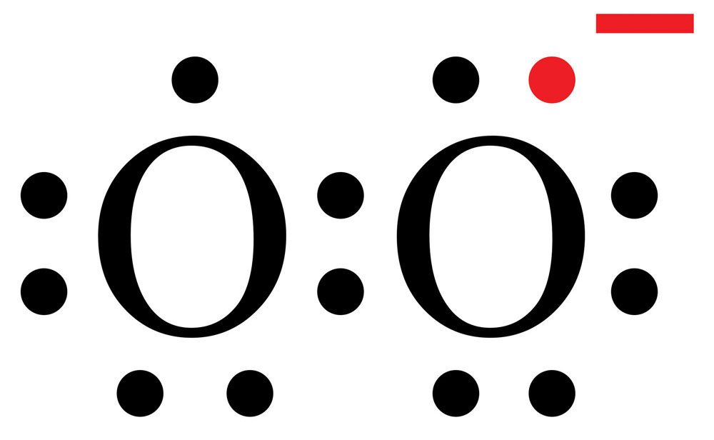

In mainstream advertising you may have heard that antioxidants can extend your life by preventing disease and slowing the aging process. But what are antioxidants? And how do they work in the body? Is there any truth to the marketers’ claims? Are there better sources than supplements for antioxidants? After reading this chapter you will be able to answer these questions, and your new knowledge will assist you in making dietary decisions to optimize your health.
Keep in mind as you read there is no scientific evidence that antioxidants singularly provide bodily benefits, but there is evidence that certain benefits are achieved by ingesting antioxidants as part of a balanced, healthy, nutrient-rich diet. This is to say antioxidants may go a long way toward preventing damage, but other nutrients are necessary to repair damage and sustain health. No one chemical acts alone!
Before we can talk about the nutritional value of antioxidants we must review a few chemistry basics, starting with the atom. Cells are the basic building blocks of life, but atomsThe basic building blocks of all matter, living and nonliving. are the basic building blocks of all matter, living and nonliving.
The structural elements of an atom are protons (positively charged), neutrons (no charge), and electrons (negatively charged). Protons and neutrons are contained in the dense nucleus of the atom; the nucleus thus has a positive charge. Because opposites attract, electrons are attracted to this nucleus and move around it in the electron cloud.
Electrons contain energy, and this energy is stored within the charge and movement of electrons and the bonds atoms make with one another. However, this energy is not always stable, depending on the number of electrons within an atom.
Atoms are more stable when their electrons orbit in pairs. An atom with an odd number of electrons must have an unpaired electron. In most cases, these unpaired electrons are used to create chemical bonds. A chemical bond is the attractive force between atoms and contains potential energy. By bonding, electrons find pairs and chemicals become part of a molecule.
Bond formation and bond breaking are chemical reactions that involve the movement of electrons between atoms. These chemical reactions occur continuously in the body and many of them will be discussed in more detail in Chapter 10 "Nutrients Important for Metabolism and Blood Function".
In Chapter 3 "Nutrition and the Human Body" we reviewed how glucose breaks down into water and carbon dioxide as part of cellular respiration. The energy released by breaking those bonds is used to form molecules of adenosine triphosphate (ATP). Recall how during this process electrons are extracted from glucose in a stepwise manner and transferred to other molecules. Occasionally electrons “escape” and, instead of completing the cellular respiration cycle, are transferred to an oxygen molecule. Oxygen (a molecule with two atoms) with one unpaired electron is known as superoxide (Figure 8.1).
Atoms and molecules such as superoxide that have unpaired electrons are called free radicalsHighly reactive atoms with unpaired electrons.; those containing oxygen are more specifically referred to as reactive oxygen speciesMolecules containing oxygen that have unpaired electrons and are highly reactive.. The unpaired electron in free radicals destabilizes them, making them highly reactive. Other reactive oxygen species include hydrogen peroxide and the hydroxyl radical.
Figure 8.1
Superoxide: A molecule with one unpaired electron, which makes it a free radical.
Source: Wikipedia. “Superoxide.” Last modified November 2, 2012. http://en.wikipedia.org/wiki/File:Superoxide.svg.
The reactivity of free radicals is what poses a threat to macromolecules such as DNA, RNA, proteins, and fatty acids. Free radicals can cause chain reactions that ultimately damage cells. For example, a superoxide molecule may react with a fatty acid and steal one of its electrons. The fatty acid then becomes a free radical that can react with another fatty acid nearby. As this chain reaction continues, the permeability and fluidity of cell membranes changes, proteins in cell membranes experience decreased activity, and receptor proteins undergo changes in structure that either alter or stop their function. If receptor proteins designed to react to insulin levels undergo a structural change it can negatively effect glucose uptake.
Free radical reactions can continue unchecked unless stopped by a defense mechanism.
Free radical development is unavoidable, but human bodies have adapted by setting up and maintaining defense mechanisms that reduce their impact. The body’s two major defense systems are free radical detoxifying enzymes and antioxidant chemicals.
Free radical detoxifying enzyme systems are responsible for protecting the insides of cells from free radical damage. An antioxidantAny molecule that can block free radicals from stealing electrons. is any molecule that can block free radicals from stealing electrons; antioxidants act both inside and outside of cells.
The three major enzyme systems and the chemical reactions they catalyze are:
Antioxidants are broadly classified as either hydrophilic (water soluble) or hydrophobic (lipid soluble) chemicals, and this classification determines where they act in the body. Hydrophilic antioxidants act in the cytosol of cells or in extracellular fluids such as blood; hydrophobic antioxidants are largely responsible for protecting cell membranes from free radical damage.
The body can synthesize some antioxidants, but others must be obtained from the diet.
There are two antioxidant chemicals that the body synthesizes. They are:
There are many different antioxidants in food, including selenium, which is one of the major antioxidants. However, the antioxidants you may be the most familiar with are vitamins. The “big three” vitamin antioxidants are vitamins E, A, and C, although it may be that they are called the “big three” only because they are the most studied.
Table 8.1 Some Antioxidants Obtained from Diet and Their Related Functions
| Antioxidant | Functions Attributed to Antioxidant Capacity |
|---|---|
| Vitamin A | Protects cellular membranes, prevents glutathione depletion, maintains free radical detoxifying enzyme systems, reduces inflammation |
| Vitamin E | Protects cellular membranes, prevents glutathione depletion |
| Vitamin C | Protects DNA, RNA, proteins, and lipids, aids in regenerating vitamin E |
| Carotenoids | Free radical scavengers |
| Lipoic acid | Free radical scavenger, aids in regeneration of vitamins C and E |
| Phenolic acids | Free radical scavengers, protect cellular membranes |
| Selenium | Cofactor of free radical detoxifying enzymes, maintains glutathione levels, aids in regeneration of vitamins C and E |
While our bodies have acquired multiple defenses against free radicals, we also use free radicals to support its functions. For example, the immune system uses the cell-damaging properties of free radicals to kill pathogens. First, immune cells engulf an invader (such as a bacterium), then they expose it to free radicals such as hydrogen peroxide, which destroys its membrane. The invader is thus neutralized.
Scientific studies also suggest hydrogen peroxide acts as a signaling molecule that calls immune cells to injury sites, meaning free radicals may aid with tissue repair when you get cut.
Free radicals are necessary for many other bodily functions as well. The thyroid gland synthesizes its own hydrogen peroxide, which is required for the production of thyroid hormone. Reactive oxygen species and reactive nitrogen species, which are free radicals containing nitrogen, have been found to interact with proteins in cells to produce signaling molecules. The free radical nitric oxide has been found to help dilate blood vessels and act as a chemical messenger in the brain.
By acting as signaling molecules, free radicals are involved in the control of their own synthesis, stress responses, regulation of cell growth and death, and metabolism.
Free Radical Formation
(click to see video)The body creates free radicals through the normal processes of metabolism. When the amount of free radicals exceeds the body’s ability to eliminate or neutralize them, an oxidative imbalance results.
Substances and energy sources from the environment can add to or accelerate the production of free radicals within the body. Exposure to excessive sunlight, ozone, smoke, heavy metals, ionizing radiation, asbestos, and other toxic chemicals increase the amount of free radicals in the body. They do so by being free radicals themselves or by adding energy that provokes electrons to move between atoms. Excessive exposure to environmental sources of free radicals can contribute to disease by overwhelming the free radical detoxifying systems and those processes involved in repairing oxidative damage.
Oxidative stressAn imbalance in any cell, tissue, or organ between the amount of free radicals and the capablilities of its detoxifying and repair systems. refers to an imbalance in any cell, tissue, or organ between the amount of free radicals and the capablilities of the detoxifying and repair systems. Sustained oxidative damage results only under conditions of oxidative stress—when the detoxifying and repair systems are insufficient. Free radical-induced damage, when left unrepaired, destroys lipids, proteins, RNA, and DNA, and can contribute to disease. Oxidative stress has been implicated as a contributing factor to cancer, atherosclerosis (hardening of arteries), arthritis, diabetes, kidney disease, Alzheimer’s disease, Parkinson’s disease, schizophrenia, bipolar disorder, emphysema, and cataracts.
Aging is a process that is genetically determined but modulated by factors in the environment. In the process of aging, tissue function declines. The idea that oxidative stress is the primary contributor to age-related tissue decline has been around for decades, and it is true that tissues accumulate free radical-induced damage as we age. Recent scientific evidence slightly modifies this theory by suggesting oxidative stress is not the initial trigger for age-related decline of tissues; it is suggested that the true culprit is progressive dysfunction of metabolic processes, which leads to increases in free radical production, thus influencing the stress response of tissues as they age.
Free Radicals or Oxidative Stress Will Age Our Bodies' Cells
(click to see video)Oxidative stress occurs when there is an imbalance between free radical production and their detoxification. Sustained oxidative tissue damage that can contribute to disease occurs only when free radical detoxification systems and repair systems are overwhelmed.